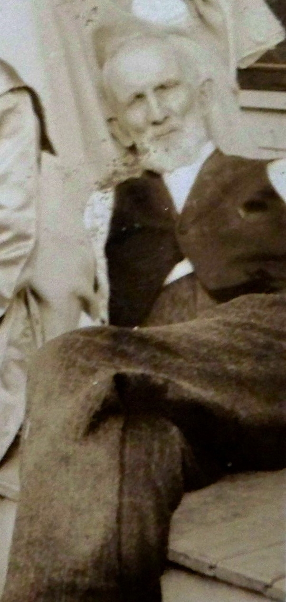
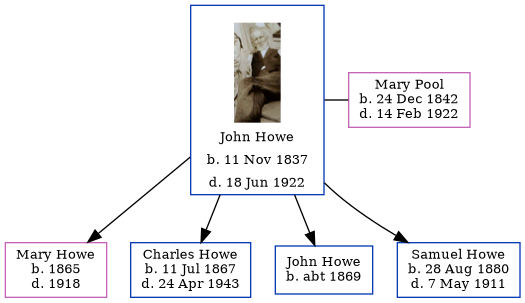

John Samuel Howe 1837 - 1922
[ Home ] | [ Calendar ] | [ Surnames Index ] | [ Errors ] | [ Family History ]John Howe, the husband of Mary Ann Pool (the second cousin four-times-removed on the mother's side of Nigel Horne), was born in Owen, Indiana, USA on 11 Nov 1837 and married Mary (with whom he had 4 children: Mary, Charles Benjamin, John P and Samuel) in Fort Wayne, Allen, Indiana, USA on 6 Oct 18641.
During his life, he was living in King City, Gentry, Missouri, USA on 15 Apr 19102; and in Gentry on 1 Jan 19203.
He died on 18 Jun 1922 in King City and was buried there at King City Cemetery after 18 Jun 1922.
Children
- Mary was born in 1865
- Charles Benjamin was born on 11 Jul 1867
- John P was born c. 1869
- Samuel was born on 28 Aug 1880
Citations
- Indiana, Marriages, 1780-1992 - Findmypast
- US Census 1910 - Findmypast (was age 72 and the head of the household)
- US Census 1920 - Findmypast (was age 82 and the head of the household)
Media
Pool Sisters

Indiana, Marriages, 1780-1992 - R_328040590
Indiana, Marriages, 1780-1992 - R_328343994
US Census 1920 - USC/1920/004966297/00822/001
US Census 1910 - USC/1910/004972619/00498/025
United States Marriages - FS/MAR/31884828/1
United States Marriages - R_1072270170
United States Marriages - FS/MAR/32616284/1
United States Marriages - R_328040590/1
Family Tree
Map
Generated by ged2site. Last updated on Jul 3, 2024
Known Issues
Birth date (11 Nov 1837) has no citations
Death date (18 Jun 1922) has no citations
Burial place (King City, Gentry, Missouri, USA) has no citations
Adding date of burial as 'aft 18 Jun 1922'